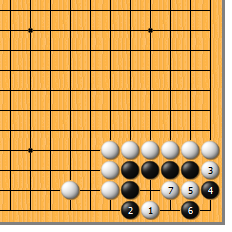
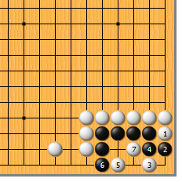
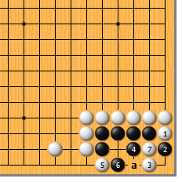
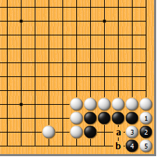
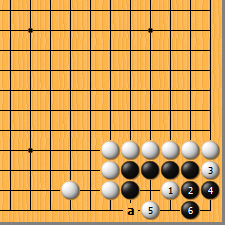
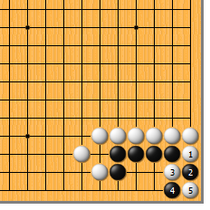

|  |  | |
| 图1 白棋有不止一种的杀黑手段。白1点，黑2时，白3拐、5断有力。黑6妄想做劫，白7退成两边不入子。白5如改走7位，黑5粘，白6扳是刀把五，也行。 | 图2 白1先拐，黑2挡时白3点，也可。黑4如粘，白5点、7鼓，成刀把五。但白3如先走5位，被黑虎到3位则活，千万别误算哦！
| |
|  |  | |
| 图3 白1、3时，黑4原本是一箭双雕的强手。只可惜气太紧了，白5扳、7断，黑仍死。白5也可先于7位断，黑a挡，白再于5位扳，黑仍不行。 | 图4 白1、黑2后，白3如马上断，黑就要好好谢谢你了。黑4作劫顽强，白5即使a位长，黑b追打仍是劫。
| |
|  | ||
图5 白1看似厉害，其实黑更加开心。黑2曲、4拐，已然活了。白5尖，黑6做眼好。白5如6位扳，黑5尖是双活。当然黑6如a位挡，被白6位扳就成刀把五了。（谁会上当？） | 图6 a位空一气会怎么样？白如果还走1、3、5，不过成劫而已，白1和黑2的交换显然损了。白1如走3位，黑4挡，白6点时黑b曲，反而净活了。
| |
|  | 您的高见 | |
图7 此时白1曲方为正解。黑2只好挡，白3断，黑4打成劫。 | 结论：气紧时是死棋，松一气是打劫。 |